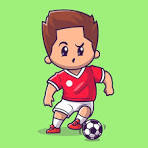
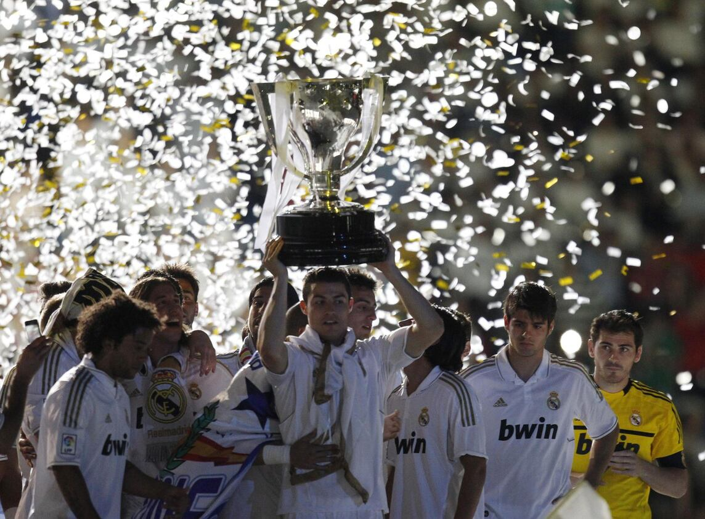

| Paso | Ejemplo |
|---|---|
| 1-Introduce tu hobby | "Me encanta la fotografía. Empecé a tomar fotos cuando era niño y desde entonces ha sido una pasión para mí." |
| 2-Explica por qué te gusta | "Me gusta la fotografía porque me permite capturar momentos especiales y ver el mundo desde diferentes perspectivas." |
| 3-Comparte experiencias y Habla sobre tus logros | "Una vez, mientras tomaba fotos en la naturaleza, me encontré con un ciervo que se quedó quieto el tiempo suficiente para que pudiera capturar una imagen increíble tambien recientemente, una de mis fotos fue seleccionada para una exposición local." |
Mi hobby es el futbol, comencé jugando
con mi familia desde pequeño y desde ahí lo he venido practicando.

El futbol me gusta porque me ayuda a relajarme
además de que me gusta divertirme jugado con mis amigos y
pues ganar
juntos se siente mejor además que también me interesa realizar jugadas
a la hora de estar en un partido
también hay que pensar rápido cuál es
la mejor opción de juego en un tiempo determinado del partido para que
así
el equipo y yo podamos entendernos y realizar un buen partido por todas
estas cosas mencionadas el futbol para mí
es muy interesante.

Cuando era más pequeño pude estar en una escuela
de futbol la cual apenas era fundada entonces fue bueno vivir esa experiencia
eh jugado varios torneos con mis amigos y también he tenido la oportunidad
de jugar con la Selección de mi pueblo en la cual
hemos jugado algunos
partidos que han realizado.